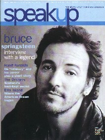
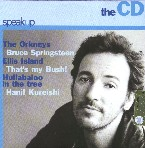
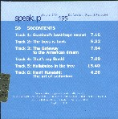
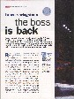
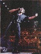
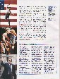
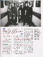
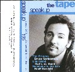

SITE MAP
- Home page
- About Me
- My Family
- My Work
- Quantitative Finance
- Bruce Springsteen
- About this site
- Contact me
|
Bruce Springsteen Interview
SpeakUp magazine, June 2001
SpeakUp is an
Italian news magazine in English, for Italians who want or have to
speak English, to improve pronunciation and comprehension.
The June 2001 issue features an interview to Bruce Springsteen.
While neither exclusive nor especially revealing the interview is
quite interesting as SpeakUp publishes not only Bruce's words, but
also Bruce's voice, on CD or tape, making it a very interesting
collectable item.
I'm sorry I can't help you get SpeakUp. Please
send your enquires to speakup.marketing@rcs.it
What follows is the published interview. The MP3 audio file is also available.
|
 |
The Boss is back
Bruce Springsteen, whose HBO live concert will be broadcast
on Italian television later this month, is one of those rock stars
who genuinely deserves the title "American cultural icon." Ever
since the early stages of his career, when TIME and NEWSWEEK hailed
him as "the Dylan of the '70," he has been producing music of
excellent quality.
His latest album, LIVE IN NEW YORK CITY, which reached number 4 in
the BILLBOARD charts, marks an interesting departure, or rather
return. Springsteen cut his teeth in the seedy bars of the New
Jersey seaside resort of Asbury Park, where he and the E Street
Band wowed local audiences. Yet in 1989 Springsteen effectively
dissolved the group, preferring to concentrate on his solo career,
but the live album re-unites him with this fine outfit.
Here "The Boss" explains a decision which has delighted his army of
fans:
|
  |
Bruce Springsteen: I think that after the TOM JOAD tour and
album, I thought I might do that again, I thought I might continue
to work acoustically for a while. And I did write a lot of songs on
that tour and I recorded about half a record, a little bit more of
acoustic music. And, when I got into it... first of all it wasn't
finished and I couldn't quite finish it at that time and also I was
sort of... it had been a while since I'd, you know, played on stage
with a rock band. And it was, it was such an essential part of what
I did. And certainly it was a long time since I'd played with the E
Street Band. And I felt like, gee, if I was going to do that again,
this was... it was just the right time to do it, you know. And I
called the fellows and we talked about it a little bit and I wanted
to and I needed to connect with the part of me that, that does that
very physical stage show, and those people, you know, were central
to my whole life, you know. It was very unusual working with people
that you worked with when you were, you know 19 And most people
don't have that particular experience. Then I was turning 50 and I
said, gee, you know, I just want to see where we can take it, you
know, what we can do with it. That was pretty much it, you
know.
|
In addition to being a great stage performer, Springsteen
uses music to make important social comments. The live album
contains the controversial song, "American Skin," which is
dedicated to the death of Amadou Diallo, an unarmed Haitian
immigrant, at the hands of NYPD officers in the Bronx.
It has created quite a stir, as Bruce explains:
|
 |
 |
Bruce Springsteen: "American Skin," basically, I was looking for
a song for the end of the tour. Really, it was misrepresented and
there was a few comments made by some police representatives before
they'd heard it, or without hearing it, and it got turned into a
bit of a media circus in New York for a while, you know. But it was
just... for me I was just writing about, you know, it was a
continuation of the work that I'd done in the past. I was writing
about the place that I live and, you know, what defines
"American-ness," you know. I think that I live in a country where a
lot of people of color feel denied full citizenship, they feel
denied full "American-ness," and that the Diallo case became a
metaphor for that feeling. And it was just something I wanted to
write about.
|
Bruce believes the advent of rock'n'roll in the 1950s paved
the way for the civil rights movement.
Elvis Presley was one of his key influences:
|
 |
 |
Bruce Springsteen: It sort of woke me up as a kid, I think, you
know. My mother was, always had the Top 40 radio on in the morning
and he was, you know, the frontiersman in many, many ways, you
know. I think that, I've sort of said in the past that that
physicality which was which you look back now, it's funny that they
were just... simply afraid to show it on television at the time,
you know. He was also one of the precursors of the whole civil
rights movement of the '60s, you know, where his personal
integration, you know, was something that... it was new at the
time, you know, it was new. And it was very, very inspirational: it
did change the world, you know.
|
Another thing that Bruce and the great late Elvis have in
common is their ability to excite an audience.
Here Springsteen talks about how he learned his craft:
|
 |
Bruce Springsteen: I think because I had the long history of,
you know, the bar-playing and it's just I became good at it, you
know, from having to come out at night and you had an audience that
hadn't heard you and you had to win them over and there's something
that happens live that you can't... you capture. I mean, this
record we caught a lot of it, you know, and the film, too, I think
the film, you get the essence of what... the band does live. If
somebody, you know, 10 years from now wanted to know what we were
about and what we did, I'd show them, "Well this is basically what
we did and who we were" and it's just something I always thought
mattered. I always enjoyed it tremendously, it was fun and I always
thought it was important that I had a chance to have some impact on
my audience and let them have impact on me, you know. It was
something we did together and gave a lot of meaning to my life and,
hopefully, that was, you know, we were good companions along the
way for our fans, you know.
|
{kind=link}
{kind=link}
{kind=link}
{kind=link}
{kind=link}
{kind=link}
{kind=link}
{kind=link}